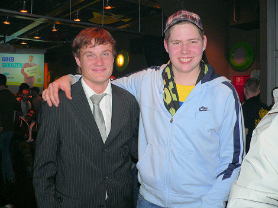
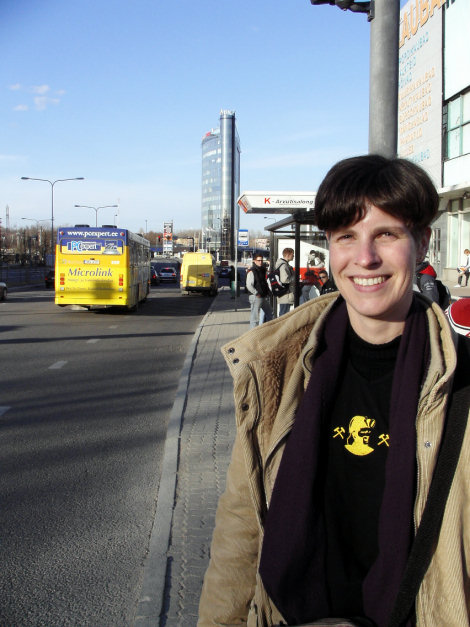
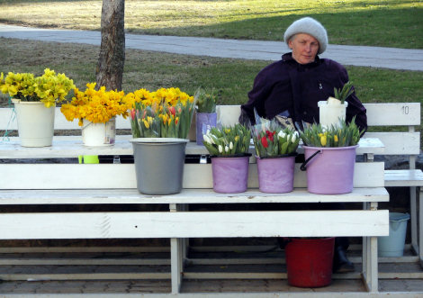
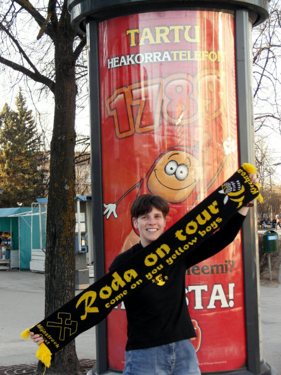
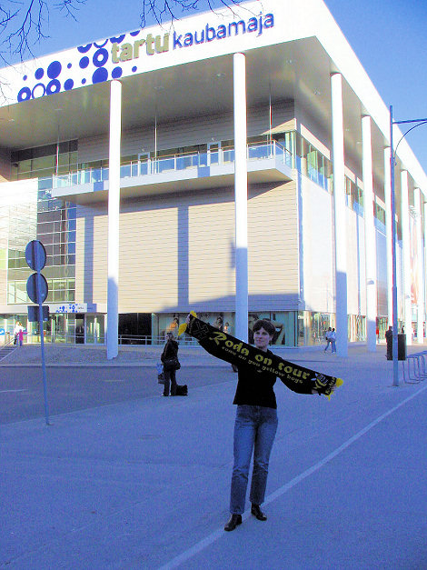
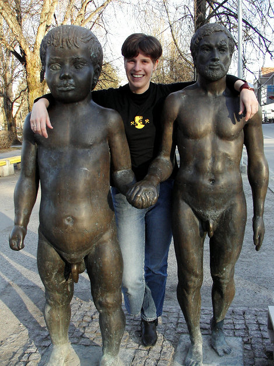
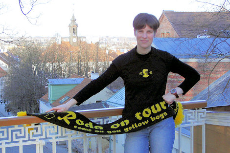
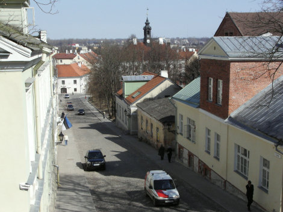
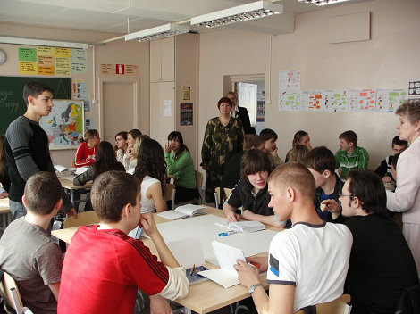
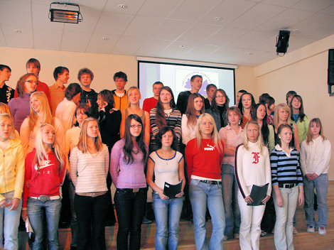

|
Roda JC On Tour - Estland
|

Andres Oper speelt sinds september 2006 bij Roda JC. Hij is de enige Est in het multiculturele Roda-bestand. Oper werd geboren in de hoofdstad
Tallinn waar hij vier en een half seizoen speelde bij FC Flora Tallinn. Via
Aalborg aB, Denemarken en Torpedo Moskou, Rusland belandde hij bij Roda JC als
opvolger van Arouna Kone.

Estland is een van de Baltische staten en is iets groter dan Nederland. Er wonen
slechts anderhalf miljoen mensen waarvan een kwart Rus is. Andres Oper is echter een
echte Est.

In het kader van een studiereis ging
aardrijkskundedocente Daniele Salden begin mei naar dit nog relatief
onontdekt stukje Europa. Op de achtergrond het Emajõe business centre.

Wie denkt dat er in deze regio nog steeds bloemen worden verkocht door oude
vrouwtjes heeft volkomen gelijk.

Op de achtergrond de "oostblok-style" marktkraampjes maar
belangrijker is de prachtige promo die hier gemaakt wordt voor onze
club.

Daniele voor het schitterende warenhuis "Kaubamaja". Zie ook
kaubamaja.ee

Tartu (waar de foto's zijn gemaakt), is de tweede grootste stad van Estland en
geldt als geestelijk centrum. Het stadje dat iets kleiner is dan Maastricht staat
vol met kunstwerken zoals hier "De primaten".

Op de "Brug der Engelen".

Straatbeeld. Links wappert de blauw-wit-zwarte vlag van Estland.

Tartu heeft een belangrijke universiteit maar dit is een gewone school voor
voortgezet onderwijs.

De jongens braaf bovenin. Estland heeft een negatieve bevolkingsgroei en de
vergrijzing is enorm. Er zijn veel meer vrouwen dan mannen ten gevolge van het
oorlogsgeweld. Foto's 3 t/m 11: M. van de Laarschot
PR Roda On Tour: D. Salden
© Koempels Pleasure Dome
|